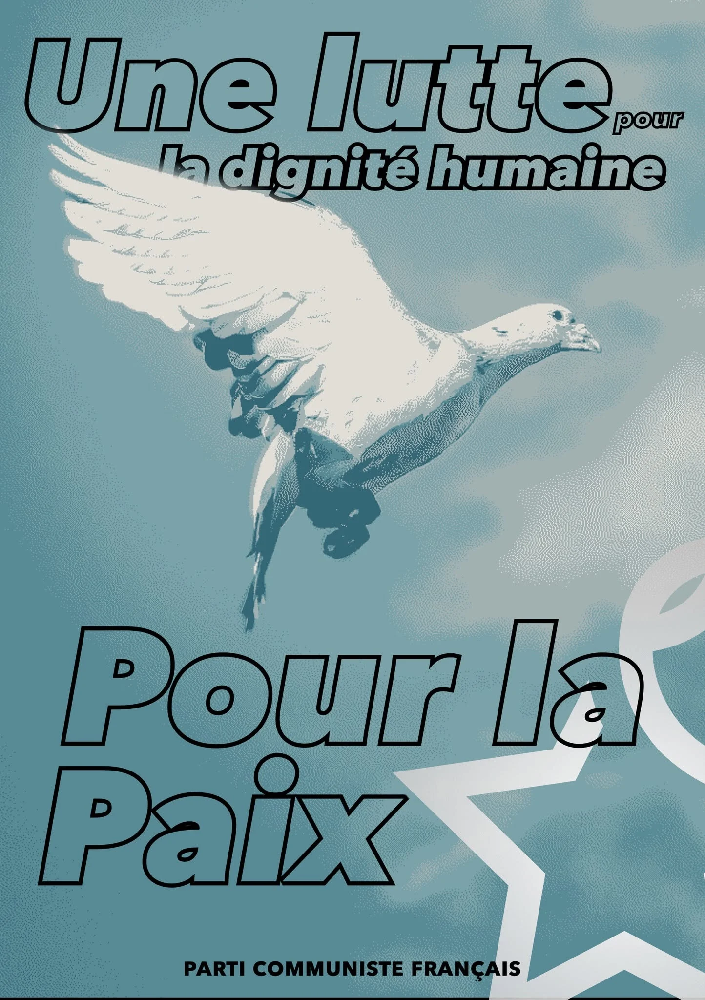

Annonce fédérale
À Niort, notre appel à commémorer le 8 Mai
Date de mise à jour indiquée par Facebook · 5 mai 2026
Repères éditoriaux
Nous avions appelé à rejoindre la commémoration du 8 Mai à 10 h 15, place des Martyrs de la Résistance à Niort. Nous y défendions la paix et la solidarité avec tous les peuples.
Texte de la publication · PCF Niort
Vendredi prochain, à l'occasion de la commémoration du 8 Mai, soyons présents en nombre pour rappeler notre attachement à la fin des guerres, à la solidarité internationale avec tous les peuples de la planète, à la grande paix humaine !
RDV à 10h15, Place des Martyrs de la Résistance à Niort.

Sources
PCF Niort · publication relayée par le PCF 79 · bibliothèque Facebook · AR-0002-FB-00788
À lire aussi · Le 8 Mai à Niort en images